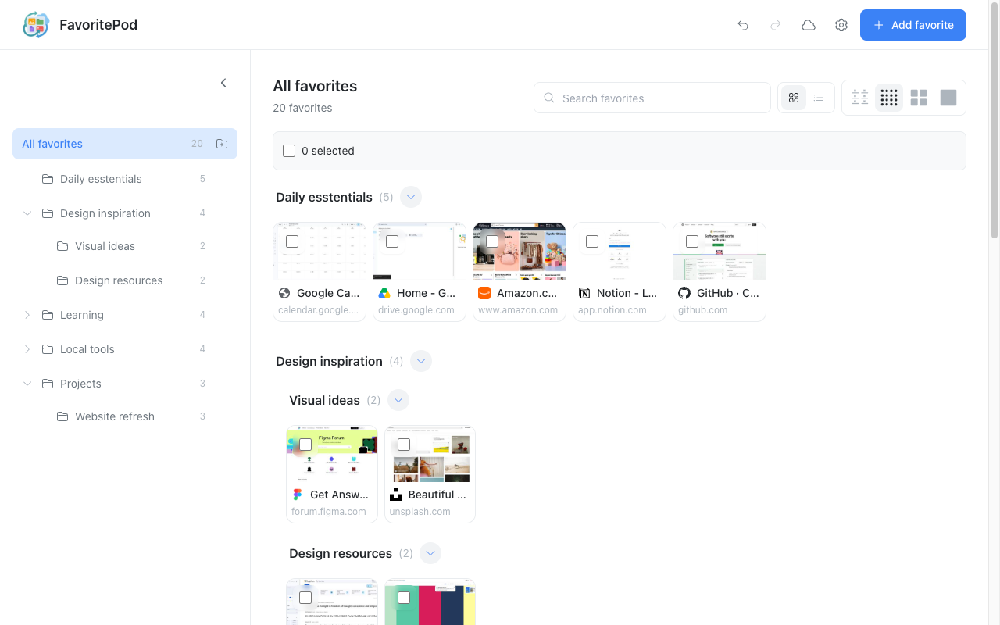

FavoritePod · Chrome extension · Version 1.0
Your favorites.
One visual home.
Keep your favorite websites and local tools together. Save pages with previews, organize them into folders, and find what you need at a glance.
Version 1.0 is being prepared for release. The Chrome Web Store installation link will appear here after publication.

Made for your everyday collection
A familiar place for useful things.
Recognize pages by their previews
Save a page from the toolbar with its title, address, and a preview when capture is available. Browse cards, switch to a list, or search by name and address.
Organize as you go
Create folders and subfolders, reorder favorites by dragging, and move several items together. Choose light, dark, or system appearance.
Keep local tools nearby
Save links to local HTML tools and files alongside websites. Use a device-specific path remap when a folder lives elsewhere on another computer.
Connect your own Google Drive
Use FavoritePod locally without an account, or connect Drive to sync your library and previews between Chrome profiles and computers.
Bring your bookmarks with you
Import Chrome bookmarks from an HTML file. Export HTML bookmarks or a FavoritePod ZIP backup that includes preview images.
Add useful shortcuts
Optionally enable Chrome's frequently visited sites and the right-click save menu. Each feature asks for its own permission.
Your library, with clear choices.
FavoritePod stores your saved titles, addresses, folders, previews, and preferences in your Chrome profile. Optional Drive sync sends library data and previews directly to Google, using FavoritePod's own hidden app-data folder. Account details identify the Google account you connect.
Previews capture visible page content, so check what is on screen before saving. Site icons may be fetched from their providers. The extension includes no advertising, analytics, or automatic error reporting. Read the FavoritePod privacy policy.
Local files require Chrome's Allow access to file URLs setting. Sync transfers saved file links and previews; the original files must exist separately on each computer. Your library is available offline, but opening websites still requires a connection unless they work offline themselves.
Built by Rocky Road Studio.
FavoritePod is free to use. If you find it useful, you can make a voluntary contribution to support its development. Contributions do not unlock additional features.